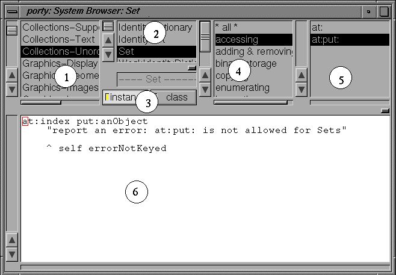

The standard System Browser consists of 5 major subviews; these components are:

(the actual appearance of the Browser depends on the viewStyle setting; the picture above was taken with the "iris-style" in effect)
Notice:
This document describes the pre 2.10.4 systemBrowser. In later releases, additional views presenting the instance variables of the current class and for namespace selection have been added.
The menu items for variable-searches are now found in the variableLists popup menu.
Within the system, all classes are assigned to a class category, this category has NO semantic function of any kind, it is simply an attribute, to group classes for easier handling. (actually, beside the browser, there are not many uses of class categories.)
Once a class category is selected (by clicking on the entry in the
class category list), the class list shows all classes belonging to
that category.
The systemBrowser also offers two "special" categories:
"* all *"
which will display all classes and show them alphabetically,
and
"* hierarchy *"
which also shows all classes, but indents them by inheritance as a tree.
Selecting a method category will show all methods in that category.
The special category
"* all *"
shows all methods in alphabetic order.
"no source available".
Also keep in mind, that these lists (like all selection lists) respond to keyboard events: especially, alpha-keys (search for the next entry with that character), cursor UP/DOWN, page UP/DOWN, HOME and END-keys are useful for navigation.
For examples on typical uses of the browser, see the last section(s) of this document.
To switch, there are two toggle buttons named "class" and
"instance".
Selecting "instance" (which is the default) makes your changes
affect the class, while selecting "class" makes them affect the metaclass.
If you are not too familiar with this concept, try the
Of course, this performs the same as evaluating "className
"hierarchy"
function of the class-lists popupMenu - especially take a careful look at this
hierarchy when looking at the class protocol.
Starting an Application by double clicking on a class
For your convenience, a double click on a class, which is
an application (i.e. subclass of ApplicationModel or a TopView application),
can be started (opened) by double clicking on the class.
(actually, any class which returns true from the #isVisualStartable message
can be started this way)
open"
in a workspace.
Opening a tool by double clicking on a method
For selectors, which are marked as windowSpec, menuSpec or imageSpec methods,
a corresponding editor application is opened on double-click.
That means, that a GUI-Painter is opened when you double-click a windowSpec method,
or an imageEditor is opened when you double-click an imageSpec method.
Doc $Revision: 1.16 $ $Date: 2016-01-27 17:47:46 $